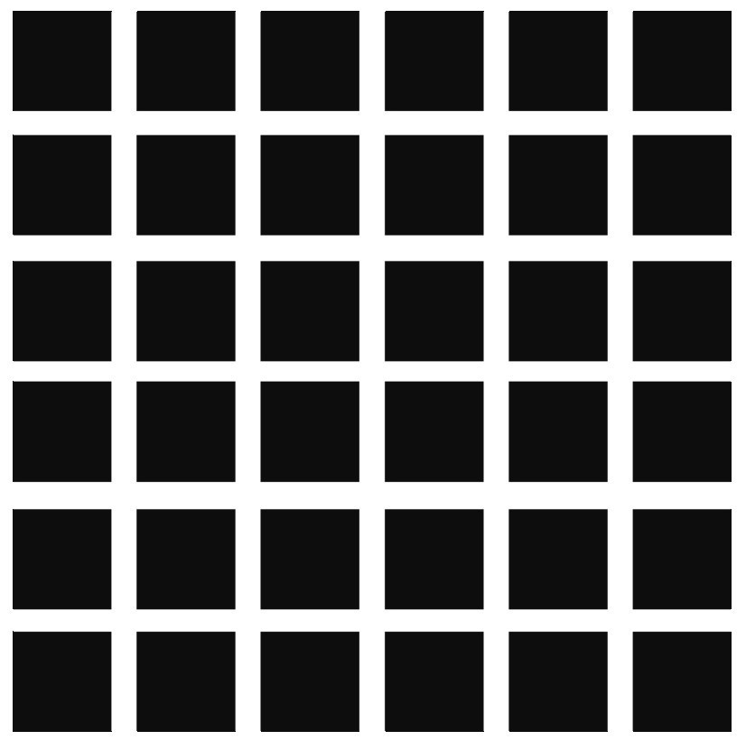
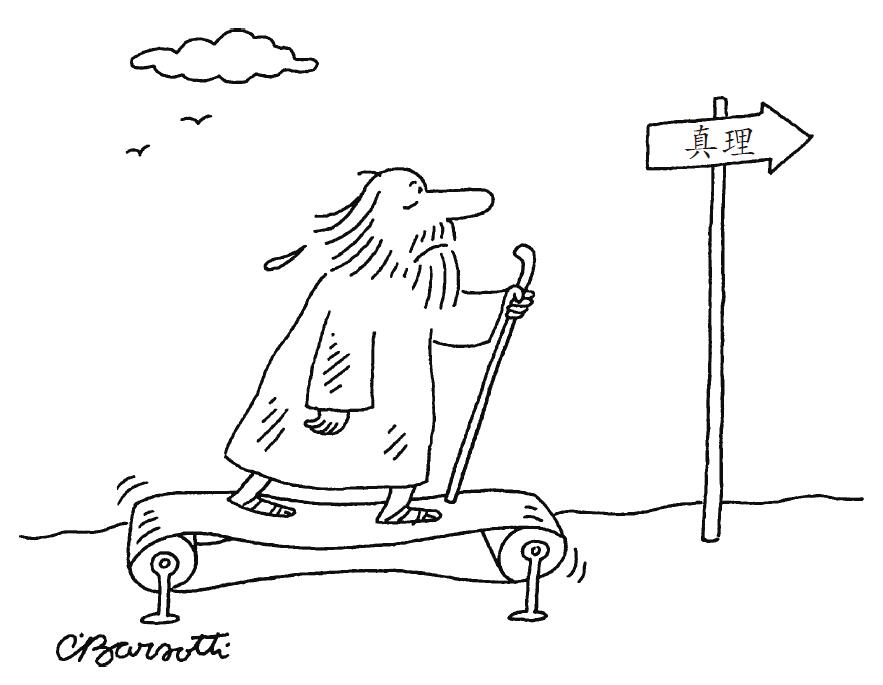

第八章
关于知识的知识
知识论的原初材料
在系统地研究知识问题以前，我们对知识都知道些什么？我们并非白手起家。哲学家们有特别的理由希望，我们从一开始就具备某种识别真正知识案例的能力，即我们对具体案例的本能或直觉，应该会支持关于知识的某一些哲学理论，胜于其他的哲学理论。比如，如果你觉得那个望向停走的时钟的人并不真的知道时间，那么这种感觉就会成为你拒绝知识的经典定义的理由。但是，是什么让你做出了那样的判断？无论别人是否也采取相同的方式，你自己的判断方式究竟是否正确？这一系列的问题最近激发了新的研究工作，其中有的是经验性的，有的是哲学上的，都是为了研究我们关于知识的直觉。
读心
“直觉”这个词或许表明了某种神秘的洞见力量，但其实日常生活中存在大量的对知识的直觉。我们可以先来想一下下述两个判断之间的区别：（1）“小李认为他被跟踪了。”（2）“小李知道他被跟踪了。”这里面的确是有重要的差异，但其实到底选择用哪一个判断通常并没有经过特别用心的计算。你会模糊地觉得，人们拥有知识并不需要内心先有一个明确的知识论观点。这种感觉就是直觉。读心就是这样一种自然的能力，它使人们产生对知识与其他心理状态的直观感受。“读心”这个词也常用于舞台上的魔术表演，其中魔术师玩了一个看起来根本不可能做到的把戏，就好像真的能读取他人的想法一样。但这个词在心理学家那里完全不是夸张，就是用来指人们在一天中经常会有的经历。所谓读心，就是把某些“隐蔽的”或藏在背后的心理状态归赋给他人，这些心理状态包括需求、害怕、相信、知道、希望以及诸如此类的其他状态。如果你看到某人伸手去够东西，你不会只是看到一只胳膊在空间中伸展，而是看到一个人想去拿盐罐，想要某个东西，以及努力地去得到它。也许只是在下意识中，我们才会注意到人们够东西与匆匆一瞥的方式，感受到其面部表情上的细微变化，从而获得关于其内心状态的线索，理解他们对外部环境的把握，于是我们就能更好地预测他们的行为，以及他们将如何与我们互动。如果没有读心的能力，我们将只能看到表面的肢体动作与面部特征的模式；只有通过读心，我们才能了解一个人内在的状态究竟是怎样的。无论我们是否想要与他人协调一致或相互竞争，知道他人想要什么、知道什么，是否友善、愤怒或缺乏耐心，都将使我们受益良多。当然，我们并不总能得到正确的答案，而很有可能搞错了别人所知道、所想要的东西，或是被某个技巧高超的骗子所蒙蔽。但总体来说，我们日常的社会交往是成功而有效的，我们对情境的误解乃是一种偶发的、会引起惊异的情况，而不会是常态。
人类有着比地球上其他物种更强的读心能力。黑猩猩也会监控对手是否知道隐藏食物的位置，它们能够理解拥有知识与缺乏知识之间的简单区分。但人类还可以追踪别人犯错的路径，而这是目前我们所知的任何其他动物都还做不到的事情。你能够看出别人持有假信念，譬如你在朋友身上搞恶作剧，把他的麦片盒倒空，放进去橡胶做的甲虫。那么你就知道，当他坐在桌前准备吃早餐的时候，他会期望从那个盒子里倒出燕麦片来。你也知道他的这个内在表征并不符合实际的外在事实。任何其他动物似乎都不能表征这种状态，即便是在某些看起来非常需要这样做的情境中。当人们用实验测试动物是否具备追溯其他动物错误信念的能力时，所有非人类的动物一概都未能成功。
这些实验设计得非常难，即便幼年的人类也会失败。例如下面这种不成功的情况就很经典：给被试的小孩拿一个他熟悉的容器，比如上面画着糖果图案的糖果盒子，然后问他这里面有什么。当然小孩会回答说：“是糖！”然后意外的事情发生了：打开盒子以后发现里面没有糖果，只有蜡笔。然后再把盒子合上。现在再告诉他，还有另一个一直等在外面的小孩，然后问：当那个小孩走进房间的时候会怎么想？那个小孩会知道盒子里面有什么吗？他会认为里面有什么？几乎所有五岁的小孩都能够回答出，那个在外面的小孩将会对盒子里的东西持有虚假信念，但如果是三岁的小孩，就只有一小部分能够回答正确。很奇怪的是，大多数三岁小孩都会说，那个外面的孩子已经知道盒子里面是蜡笔；更令人诧异的是，如果问三岁的小孩他们一开始看到盒子时的想法，许多人都会给出错误答案。设想他人拥有虚假信念是一件要求较高的任务，就像回想你自己过往的错误一样困难，因为你需要压制住自己对现实的当下印象，以便能够从那个出错的人的视角去看问题。信念或意见可以符合外部世界，也可以不符合，是一种相对复杂的表征状态。如果知识是一种必须反映事实本身的状态，那么知识的归赋就容易多了。
主张“知识优先”纲领的人试图从这些发现与其他研究中获取对自己观点的支持，那些研究的观点是，知识的状态要比纯粹信念的状态更容易表征。例如，“知识”一词在各种文化中都要比动词“相信”更早习得，也用得更多。批评者们则认为，习得概念的顺序并不表明其中哪一个更基本。毕竟，我们用食用盐这样的概念，要远远早于了解构成它们的成分，而且我们也更经常地提起这一化合物。另一个经常被提出来的疑问是，如果孩童因为年纪小而无法理解虚假信念的概念，那么在同样的年纪是否就能把握知识的概念呢？更麻烦的是，新近的一些研究表明，很小的孩童甚至是婴儿就已经能部分地鉴别虚假信念了，只不过这种能力的范围与意义还不甚清晰。目前，我们仍然在试图搞清楚人类识别知识的能力究竟是怎样发展起来的，而对这一困难问题的持续研究仍会为我们知识与信念的日常概念的自然结构给出日益清晰的图景。
更一般地说，经验研究将会更好地揭示人类读心能力的本质局限。这些能力包含许多高度专门化的装备。方框7中的三个小故事展现了这些装备，它们被用于麻省理工学院的神经科学家丽贝卡·萨克斯领导的研究之中。
方框7 激活不同脑区的小故事
1.物理
在核桃林边缘的红色大谷仓后面，是附近最壮丽的池塘。它又宽又深，岸边有一棵老橡树。池塘里有各种各样的东西：鱼、旧鞋子、丢失的玩具和三轮车，以及许多其他的惊喜。
2.人
老麦克菲格尔比先生是一个老农民，有着灰白的头发和皱巴巴的面庞，穿着灰白色的皱巴巴的旧工作服和旧靴子。他一辈子生活在这片土地上，年纪甚至比这里的许多树都大。小乔治是麦克菲格尔比先生在镇上的侄子。
3.心理
麦克菲格尔比先生不想让任何小男孩在池塘里钓鱼。但小乔治装作没注意。他非常喜欢钓鱼，而且他知道自己跑得比镇上的任何人都快。乔治决定，如果麦克菲格尔比先生发现他在钓鱼，他就会快点跑掉。
在你读这几个故事的时候，你的大脑上的不同区域会有选择性地被激活。对于小孩子的大脑来说，第二个和第三个故事激活的脑区并不会有什么特别的差异，但对大一些的孩子和成年人来说，第三个故事是非常特别的。理解这个故事就需要能表征其中人物的心理状态。像这样的故事就会选择性地激活靠近右耳的脑区——右侧颞顶联合区（RTPJ）。其他的脑区也会参与，像是内侧前额叶皮质（MPFC）就是在成人和孩子阅读所有与人相关的故事时会被激活的脑区，当然也包括了方框中的第二个故事。对小孩子来说，阅读任何有社会性内容的故事都会激活右侧颞顶联合区，但对成年人来说，这个区域只会专门响应与人们的知识、需要、决定、假装和信念等诸如此类的东西相关的故事。如果这个脑区遭遇外力重击或内部病变的损伤，抑或是在实验中因经颅磁刺激而暂时关闭，那么，对于他人知道什么以及会做什么，我们做出评价与预测的能力都会被极大地削弱。
成年人的大脑里有专门负责读心的区域，这并不稀奇。尽管我们可以不假思索地做这件事，但实际上读心所用到的计算是非常复杂的。在这方面它很像面部识别的能力，都涉及非常迅速而不假思索的计算过程，也都在成年人大脑中有着高度专门化的区域。设想一下，当你观察某人的时候，他想要、注意、假装与计划什么之间究竟有着怎样的关联？在这些模式中，操作乃是一项很有意义的工作。在日常的交谈中，如果我们能够决定把某人描述为仅仅相信某件事情，还是说他真的知道了这件事情，那么这都可以在不假思索的计算中完成。之所以能做到这些，某种程度上就是因为，我们的大脑有专门负责追溯他人心理状态的功能区域。
我们的读心能力也有一些自然上的限制。首先，我们所能表征的心理状态的嵌套层级是有限的。下面这句话里用了四个层级：“戴维斯认为，小李知道史密斯并不想让琼斯得到关于工作的信息。”你能理解这句话吗？研究表明，人们有可能追溯到九个层级，但是大多数成年人只能做到五个层级的水平，超过这个层级之后，读心能力就会停止工作，人们开始随机地回答理解与否的问题。对于那些社交面广的人来说，这方面往往会做得好很多。这种限制就有点像是追踪屏幕上活动对象的有限能力。大多数人只能同时追踪五个活动对象，资深的电子游戏玩家可能会水平更高：这两类能力的自然限制都在于，我们只有这么多的注意力可资调用。
在读心的能力上，还有更深的一层限制是这种能力独有的，那就是一种自我中心化的倾向。更准确一点说，我们受制于一种“自我中心主义”的偏见。因此，当我们评价那些对自己的境况了解比我们少的人时，我们会难以克服自己固有的视角。在低龄段的孩子中，这样的偏见是非常常见的，前面提到的那个糖果盒子的任务就是其中的一个例子。虽然第一个小孩知道糖果盒里是蜡笔了，但他却难以想象别的小孩子会不知道这一点。儿童的认知通常都会遇到这样的困难，就是难以认识到他人从世界中获取信息的局限性。例如，让一个孩子举起两个存钱罐，两个虽然看起来完全一样，但一个轻一个重。即便这是个大一点的孩子，能够通过糖果盒任务的测试，他还是会错误地预判说，别人隔着老远就能看出这两个存钱罐哪个重。
甚至连成年人也还是会在类似的问题上出错。在推算一个所知较少的人的视角时，我们很难悬搁掉自己对情境的私有知识。譬如说，在炒股游戏中，假如其中有一方得到了“内幕”消息，且他们也知道对手缺乏这些消息。按道理来说，信息上占优势的这一方应该把自己得到的信息搁置一旁，以便能更好地预测对手会对自己的报价做何回应，此时对手的视角由于缺乏信息而更简单，但实际上信息占优势的一方却很难做到完全搁置自己的信息。当我们评价他人决策过程的优劣时，我们也很难避免自己对情境的私有知识的影响：假如你得到的消息说，某一个本来机会渺茫的赌局最终却得到了令人满意的结果，那么这个信息就会影响你评价赌局玩家的决策明智与否。尽管你也认识到，把结果的信息纳入考量并不合情理，但这个影响的程度也还是会超出你的预期。
在表征或评价他人视角的时候，为什么我们如此难以去除自己私有的特殊知识的影响？目前还不完全清楚这其中的原因。但我们可以确定的是，这个自我中心的偏见特别顽固：如果提前警告有这样的偏见存在，或是给以利益刺激，那么有可能会暂时压制这些偏见以获得更好的行为表现，但即便是在这些条件下也还是不能完全去除自我中心主义的影响。知识论学者想要讨论的是，既然这是我们看待他人视角时的自然局限性，那么它是否也在某种意义上激发了那种支持语境主义的直觉模式？一旦我想到了“巧妙伪装过的驴子”这样的可能性，那么我就难以评价一个动物园参观者的简单视角：即便我明确地意识到，这样一个简单的参观者并不会设想那些奇奇怪怪的可能性，但是，自我中心主义也还是会让我以类似的方式去评价他。无论这是否能解释语境主义背后的知识直觉，能够更好地理解这样一些自然机制——正是它们决定了我们对有无知识的直觉判断——知识论学者都会收益良多。如果其中的某些直觉是从读心能力的自然局限或偏见中衍生出来的，那么在构建知识的理论时我们就必须特别小心地加以处理。
案例法面临的挑战
对直觉的本质感兴趣的哲学家可以去关心读心的经验研究，但也可以尝试做某些更为直接的工作：面向普通人对知识论重要案例的直觉做民意测验。这种方法就是所谓的“实验哲学”（experimental philosophy），在它发展的早期确实提供了一些出人意料的成果。实验哲学方面的第一篇论文是在2001年发表的，是由乔纳森·温伯格和他的同事们完成的，旨在研究对一系列小故事的直觉回应，这些小故事都与人们的判断有关。有的就很简单：“假如有人对抛出的硬币将正面朝上有‘特殊的感觉’，那么他是否真的知道硬币会正面朝上？”大概九成以上的回答是否定的。有的案例就很复杂，包含一些复杂的假设性秘密约定。下面的方框8就描述了一个较难的案例，这其实是一个盖梯尔反例。在实验中，绝大多数被试者都报告说，故事中的核心人物并没有知识，判断的理由与主流哲学家的主张相同。但也并非所有亚群体都支持相同的观点：在66个自我认同为“西方人”的被试者中，有74%的人给出了上述标准答案；而在23个自我认同为“东亚人”的被试者中，只有43%的人给出标准答案；到了另外23名来自“印度次大陆”的被试者中，这个比例则是39%。由此，温伯格和他的合作者得出结论说，在知识论上信任自己直觉的哲学家们并不是在揭示知识的客观本质，而只是在研究表现他们各自固有文化态度的完全不同的行为。这些其他文化共同体或许并不具有的态度，也就未必会向我们展现知识的本质。所以，实验哲学运动倡导人们不要使用直觉来研究哲学。
方框8 温伯格及其合作者的美国汽车案例（2001）
吉尔是鲍勃的朋友，她多年以来一直开一辆别克牌汽车。所以，鲍勃就认为吉尔开的是一辆美国产的汽车。然而，他所不知道的是，吉尔的别克牌汽车最近被偷了，也不知道吉尔已经换了一辆庞蒂克牌汽车，这是另一种美国产的汽车。那么，鲍勃现在真的知道吉尔开的是一辆美国产的汽车吗？还是说他仅仅是相信这一点？
请选择：
真的知道 仅仅相信
这让传统的哲学家们很恼火，他们提出了各种各样的批评。有的批评针对的是这个案例的细节。比如，这个案例的主题内容是美国汽车品牌，不同的文化群体对这一主题的兴趣也有差异，有的一下子就能辨识出别克是美国的汽车品牌，那么对于这些人来说，这个故事就更有可读性，更容易理解。更进一步说，这个故事还可以以不同的方式更加充实和完整起来。例如，我们是否要假设吉尔总是开美国产的汽车，而且鲍勃作为她的朋友也知道这个事实呢？如果从这个角度来重述故事，那么它甚至连盖梯尔反例都算不上：因为，别克牌汽车的被盗并不会改变吉尔这个“只开美国产汽车”的长期倾向，而她的朋友也是知道这个倾向的。还有的哲学家主张，我们不应该过于看重非专业人士给出的不假思索的意见，因为这些意见无疑地会受到各种随机因素的影响；而对哲学图景的直觉之所以重要，乃是因为它是认真反思之后的结果。然而，在认真反思的过程中，谨慎与细心是绝对必要的，至少对那些声称自己在发展理论以理解前理论直觉的哲学家来说如此。但这同样也会招来批评者的指责：如果你还需要对自己的直觉做非常艰难的思考，那么你的判断将难以避免受到所持有的理论观点的污染。
温伯格的这项原创性发现最近受到了一些挑战，但同时遗留了一些实验哲学的更大问题以待解决。通过对更广泛的案例的系统性研究，结果表明，哲学家们传统上所说的那些直觉，实际上并不专属于西方人。规模更大的研究从各种不同的文化中选择被试者，在各种盖梯尔反例，包括那个最初的“美国产汽车”案例上，结果发现存在着非常一致的知识归赋模式，不分文化差异或性别差异。普通人的确倾向于赞同专业哲学家们的意见，主张盖梯尔式反例中的认知者并没有真正的知识。温伯格及其合作者曾关心的是，盖梯尔式的回应只是从非常特殊的文化群体中生发出来的，因此并不能作为知识本身之有无的证据；而这些后续的研究更倾向于支持说，这样的回应乃是有着普遍的意义。这些新近的发现符合对知识概念的演进所做的跨文化研究。不论是来自伦敦和东京大型都市幼儿园的儿童，还是来自喀麦隆农村从事狩猎——采集的社群的儿童，他们都经历了同一个把知识与无知或假信念区分开的漫长过程。可以肯定的是，成年人的行为表现在不同文化中有时会有些差异。例如，与美国成年人相比，中国的成年人似乎能更快更准确地推算他人的视角。但在知识归赋的根本能力上，不同的文化共同体之间似乎并没有什么差别。如果说，实验哲学的早期研究加深了这样的焦虑，即哲学家与非专业人士之间并不共享关于知识的直觉，那么，新近的研究则表明，这样的焦虑并无必要。然而，更深层的焦虑依然存在，因为某个印象被广泛地接受并不意味着这样的印象就是正确的。
正如在盖梯尔反例上普通人与专业哲学家共有一些直觉，在某些更有争议的案例上他们也会有相同的直觉。设想一间普通的家具店里有个人叫阿尔伯特，他看到一张亮红色的桌子非常喜欢，查看了它的价格后，问他太太：“你喜欢这张红桌子吗？”就这个案例来说，你是否能说阿尔伯特知道这张桌子是红的？在新近的研究中，有92%的学生给出了肯定的答案。现在考虑一下这个故事的另一个版本，只需要加上少许的细节。这张桌子的确是红的，而且家具店里的灯光也是正常的，但你要注意到这个更进一步的事实：假如这是一张白桌子放在亮红色的聚光灯下，那么在阿尔伯特看来它同样会是亮红色的桌子，而他并未检查过灯光是否正常。那阿尔伯特还会知道桌子是红的吗？结果只有不到一半的被试者回答仍是肯定的。由于某种原因，只要想到某种出错的可能性，即便很清楚阿尔伯特根本没有这种出错的风险，仍然会极大地弱化人们对他的知识归赋。需要注意的是，上述两个故事并不是对不同的客观环境中的两个不同人物的描述，第二个故事只是在第一个故事的基础上添加了某些细节，后者本来也可以讲述。这就像是当我们更加认真地思考案例时，我们对待知识标准的态度，从较为慷慨豁达转换为更为苛刻和吝啬。正是这样的直觉模式促使部分哲学家走向怀疑论，而另一部分则求助于语境主义。
表面上看，这两个判断之间有某种不连贯性。怀疑论者认为，我们只能信任第二个直觉，即主张阿尔伯特没有知识；毕竟这是在我们认真思考情境之后拥有的直觉。语境主义者则认为，这种表面的不连贯性并非真实的存在：这两种直觉都没什么不对的，甚至也根本不冲突，因为在第二个情形中，当我们思考看似不可能的可能性时，我们会以更严苛的标准使用“知道”这个词。阿尔伯特满足了较低的标准，但并不满足那个高的知识标准。这正像说一个人相对于普通美国人来说是高个子，但相对于专业运动员来说身高一点也不突出。同时，温和的不变论者会说，第二个更具怀疑论性质的直觉才是不可取的，因为它有可能产生于某些心理上的偏见。例如，我们还可以这样来评价阿尔伯特：他自己实际上已经在思考有异常灯光影响的可能性了，但在判断桌子为红色以前，顽固地拒绝检查灯光是否正常。按照温和不变论的观点，我们对这一案例的回应乃是一种认知上的错觉：大脑中的某些东西在这里自然地估算错了，正像在赫尔曼栅格错觉（图9）中，我们的眼睛会自然但错误地发现，在栅格的框角处有一些暗点。实验哲学的工作表明，这样的直觉模式广泛存在，但它不能告诉我们哪一个直觉才真正抓住了知识的本质，也不能说明哪些直觉是错觉。我们怎么才能解决这个问题呢？

图9 赫尔曼栅格错觉
知识的印象与知识本身
有的哲学家主张，我们所面对的乃是一个毫无希望的处境。如果怀疑你戴的手表走快或是走慢了，你还可以用美国国家研究委员会的原子钟来检验；但如果你想检验自己关于知识的直觉是否准确，就没有任何明显的对应途径。如果对这些具体的案例产生的直觉回应缺乏一个融贯的知识论理论解释，你可能就会怀疑，其中有一些直觉只是错觉而已。但到底哪些才是错觉呢？哲学家罗伯特·卡明斯主张，假如对于知识自身的本质，能有某些独立的、无须直觉介入的途径去把握，那么我们才有可能分辨出哪些对知识的直觉是正确的。但是，如果我们有这种直接途径的话，我们就不必用对具体案例的直觉来把握知识的本质：“如果你的知识已经多到足够让你用哲学直觉来解决问题的话，你也就不再需要直觉的介入了。”因此，卡明斯得出结论说，哲学家不应该依赖对案例的直觉来做知识论的研究。
应该说，这是个非常悲观主义的回应。如果拿知觉来做类比的话，这相当于说：我们必须要先有某种独立的、不依赖于视觉的途径来理解颜色，才有可能解决对颜色的视觉印象的种种问题，才可能分辨出其中哪些是错觉。事实上，我们的确发展出了某些分辨颜色信号的技术手段，以便摆脱对肉眼的依赖。例如，光度计可以测量赫尔曼栅格图上的颜色，而且不会受框角暗点的干扰。尽管如此，我们并不真的会等到有了这种仪器才开始区分错觉与正确的印象。长期以来，我们一直用行之有效的手段来分辨哪些印象是正确的，譬如说我们会对获得的印象在不同的环境中、从不同的角度做一再的确认。我们对视觉的理解正是伴随着我们对光与颜色本质的理解一同演进。

图10 我们能否取得进步？
同时，即便在知识论上并没有光度计那样的装备可以探究知识的状态，对知识直觉的探究也一样会随着对知识本身的探究一同演进。如果我们能更好地理解分辨知识的直觉能力，使之纳入心理学的广阔图景，我们也就能更好地判断出哪些直觉才是真正重要和有意义的。同时，如果我们能对知识本身提供更为敏锐的哲学构想，就将有助于推进我们对这些直觉本质的理解。直觉以外的工具也可以用来处理知识的问题。我们可以努力发展内在一致的知识论，使之适于人类语言、逻辑、科学和学习等方面的更为宽泛的理论。我们可以尝试构建个人知识与群体知识的数学模型，以便精确地刻画我们对知识形成条件的粗糙直觉。我们可以比较不同历史时期和不同文化中产生的既有哲学理论的优势。其中有的关于知识的哲学主张被证明是混乱或自毁性的，但也有一些成果，譬如说知识与真理的特殊关联，经受住了时间的考验。如果我们还无法提前预知何种方法最适合产出关于知识本质的深层洞见，那么这部分地是由于我们仍然没有完全理解究竟什么是知识。但是，即使我们还没有充分了解知识的本质，我们现在也已经在这个古老的问题上取得了更好的进展。